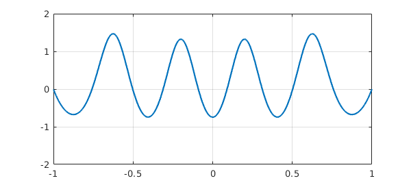
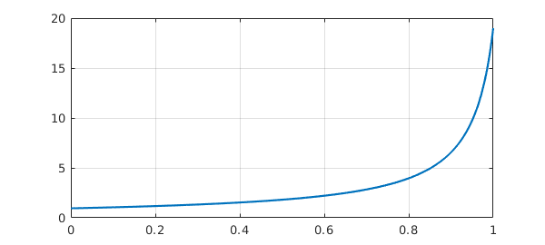
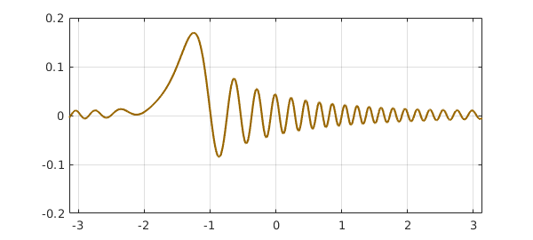

Chapter 7 described the chebop capability for solving linear ODEs (ordinary differential equations) by the backslash command. We will now describe extensions of chebops to nonlinear problems, as well as other methods for nonlinear ODEs:
o Initial-value problems: ode45, ode113, ode15s
o Boundary-value problems: bvp4c, bvp5c
o Both kinds of problems via chebops: nonlinear backslash (=solvebvp)
In this chapter we outline the use of these methods; for fuller details, see the help documentation and especially the online Chebfun Examples. The last of the methods listed, nonlinear backslash or solvebvp, represents a "pure Chebfun" approach in which Newton's method is applied on chebfuns, with the necessary derivative operators calculated by Chebfun's built-in capabilities of Automatic Differentiation (AD). This is the main Chebfun method recommended for solving boundary-value problems.
We use the abbreviations IVP for initial-value problem and BVP for boundary-value problem.
For time-dependent PDEs, try help pde15s.
10.1 ode45, ode15s, ode113
MATLAB has a highly successful suite of ODE IVP solvers introduced originally by Shampine and Reichelt [Shampine & Reichelt 1997]. The codes are called ode23, ode45, ode113, ode15s, ode23s, ode23t, and ode23tb, and are adapted to various mixes of accuracy requirements and stiffness.
Chebfun includes versions of ode45 (for medium accuracy), ode113 (for high accuracy), and ode15s (for stiff problems) originally created by Toby Driscoll and Rodrigo Platte. These codes operate by calling their MATLAB counterparts, then converting the result to a chebfun. Thanks to the Chebfun framework of dealing with functions, their use is very natural and simple.
For example, here is a solution of $u' = u^2$ over $[0,1]$ with initial condition $u(0) = 0.95$.
fun = @(t,u) u.^2; u = chebfun.ode45(fun, [0, 1], 0.95); LW = 'linewidth'; lw = 1.6; plot(u,LW,lw)

The first argument to ode45 defines the equation, the second defines the domain for the independent variable, and the third provides the initial condition.
To find out where the solution takes the value 10, for example, we can write
roots(u-10)
ans = 0.952926047089522
As a second example, let us consider the linear second-order equation $u''=-u$, whose solutions are sines and cosines. We convert this to first-order form by using a vector $v$ with $v(1)=u$ and $v(2)=u'$ and solve the problem again using ode45:
fun = @(t, v) [v(2); -v(1)]; v = chebfun.ode45(fun, [0 10*pi], [1 0]); plot(v,LW,lw) ylim([-1 1])

Here are the minimum and maximum values attained by $u$:
u = v(:,1); uprime = v(:,2); minandmax(u)
ans = -1.000068010175644 1.000039406904860
Evidently the accuracy is only around five digits. The reason is that the chebfun ode45 code uses the same default tolerances as the original ode45. We can tighten the tolerance using the standard MATLAB odeset command, switching also to ode113 since it is more efficient for high-accuracy computations:
opts = odeset('abstol',3e-14,'reltol',3e-14);
v = chebfun.ode113(fun, [0 10*pi], [1 0], opts);
minandmax(v(:,1))
ans = -0.999999999999994 1.000000000000000
As a third example we solve the van der Pol equation for a nonlinear oscillator. Following the example in the MATLAB ODE documentation, we take $u'' = 1000(1-u^2)u'-u$ with initial conditions $u=2$, $u'=0$. This is a highly stiff problem whose solution contains very rapid transitions, so we use ode15s in "splitting on" mode:
opts = odeset('abstol',1e-8,'reltol',1e-8);
fun = @(t,v) [v(2); 1000*(1 - v(1)^2)*v(2) - v(1)];
chebfunpref.setDefaults('splitting','on')
v = chebfun.ode15s(fun, [0 3000], [2 0], opts);
chebfunpref.setDefaults('factory')
u = v(:,1); plot(u,LW,lw)

Here is a pretty good estimate of the period of the oscillator:
diff(roots(u))
ans = 1.0e+02 * 8.072000511670380 8.072001250877227
Finally here is an illustration of the Lorenz equations:
fun = @(t,u) [10*(u(2)-u(1)); 28*u(1)-u(2)-u(1)*u(3); u(1)*u(2)-(8/3)*u(3)]; u = chebfun.ode15s(fun, [0 30], [-5 -7 21], opts); plot3(u(:,1), u(:,2), u(:,3)), view(-5,9) axis([-30 30 -50 50 5 45]) xlabel x, ylabel y, zlabel z

10.2 bvp4c, bvp5c
MATLAB also has well-established codes bvp4c and bvp5c for solving BVPs, and these too have been replicated in Chebfun. Again the Chebfun usage becomes somewhat simpler than the original. In particular, there is no need to call bvpinit; the initial guess and associated mesh are both determined by an input initial guess $u_0$.
For example, here is the problem labeled twoode in the MATLAB bvp4c documentation. The domain is $[0,4]$, the equation is $u'' + |u| = 0$, and the boundary conditions are $u(0)=0$, $u(4)=-2$. We get one solution from the initial condition $u=1$:
twoode = @(x,v) [v(2); -abs(v(1))]; twobc = @(va,vb) [va(1); vb(1)+2]; d = [0,4]; one = chebfun(1, d); v0 = [one 0*one]; v = bvp4c(twoode, twobc, v0); u = v(:,1); plot(u,LW,lw)

The initial guess $u=-1$ gives another valid solution:
v0 = [-one 0*one]; v = bvp4c(twoode,twobc,v0); u = v(:,1); plot(u,LW,lw)

Here is an example with a variable coefficient, a problem due to George Carrier described in Sec. 9.7 of the book [Bender & Orzsag 1978]. On $[-1,1]$, we seek a function $u$ satisfying
$$ \varepsilon u'' + 2(1-x^2)u + u^2 = 1 ,\qquad u(-1) = u(1) = 0. $$
with $\varepsilon = 0.01$. Here is a solution with bvp4c, just one of many solutions of this problem.
ep = 0.01; ode = @(x,v) [v(2); (1-v(1)^2-2*(1-x^2)*v(1))/ep]; bc = @(va,vb) [va(1); vb(1)]; d = [-1,1]; one = chebfun(1,d); v0 = [0*one 0*one]; v = bvp4c(ode, bc, v0); u = v(:,1); plot(u, LW, lw)

10.3 Automatic differentiation
The options described in the last two sections rely on standard numerical discretizations, whose results are then converted to Chebfun form. It is natural, however, to want to be able to solve ODEs fully within the Chebfun context, operating always at the level of functions. If the ODE is nonlinear, this will lead to Newton iterations for functions, also known as Newton-Kantorovich iterations. As with any Newton method, this will require a derivative, which in this case becomes a linear operator: an infinite-dimensional Jacobian, or more properly a Frechet derivative.
Chebfun contains features for making such explorations possible. This means that with Chebfun, you can explore Newton iterations at the function level. The enabling tool is Chebfun Automatic Differentiation (AD), introduced by Asgeir Birkisson and Toby Driscoll [Birkisson 2014, Birkisson & Driscoll 2011].
To illustrate Chebfun AD, consider the sequence of computations
x = chebfun('x', [0 1]);
u = x.^2;
v = exp(x) + u.^3;
w = u + diff(v);
Suppose we ask, how does one of these variables depend on another one earlier in the sequence? If the function $u$ is perturbed by an infinitesimal function $du$, for example, what will the effect be on $v$?
As mathematicians we can answer this question as follows. The variation takes the form $dv/du = 3u^2 = 3x^4$. In other words, $dv/du$ is the linear operator that multiplies a function on $[0,1]$ by $3x^4$.
In Chebfun, to compute this operator, we need to select a variable to act as a basis variable for derivative computations, and seed its derivative. (This procedure has changed with Version 5.) To compute derivatives with respect to $u$, we convert it to an object known as an adchebfun and redo the computations:
u = adchebfun(u); v = exp(x) + u.^3; w = u + diff(v);
We can now obtain the derivative of $v$ with respect to $u$ by accessing the .jacobian field of $v$:
dvdu = v.jacobian;
The result dvdu is a linear chebop of the kind discussed in Chapter 7. For example, dvdu*x is $3x^4$ times $x$, or $3x^5$:
plot(dvdu*x, LW, lw)

Notice that dvdu is a multiplication operator, acting on a function just by pointwise multiplication. (The technical term is multiplier operator.)
What about $dw/du$? To do this on paper we must think a little more carefully and compute
$$ {dw\over du} = {\partial w\over \partial u} + {\partial w\over \partial v}{\partial v\over \partial u} = I + D(3u^2) = I + D(3x^4), $$
where $I$ is the identity operator and $D$ is the differentiation operator with respect to $x$. If we apply $dw/du$ to $x$, for example, the result will be $x + (3x^5)' = x + 15x^4$. The following computation confirms that Chebfun reaches this result automatically.
dwdu = w.jacobian; norm(dwdu*x - (x+15*x.^4))
ans =
8.422556560155997e-16
We can use use the overloaded spy command to see at a glance that the first of our Frechet derivatives is a multiplier operator while the others are non-diagonal:
subplot(1,2,1), spy(dvdu), title dvdu subplot(1,2,2), spy(dwdu), title dwdu
We now look at how AD enables Chebfun users to solve nonlinear ODE problems with backslash, just like the linear ones solved in Chapter 7.
10.4 Nonlinear backslash and solvebvp
In Chapter 7, we realized linear operators as chebops constructed by commands like these:
L = chebop(-1, 1); L.op = @(x,u) 0.0001*diff(u,2) + x.*u;
We could then solve a BVP:
L.lbc = 0; L.rbc = 1; u = L\0; clf, plot(u, 'm', LW, lw)

What's going on in such a calculation is that L is a prescription for constructing matrices of arbitrary dimensions which are spectral approximations to the operator in question. When backslash is executed, the problem is solved on successively finer grids until convergence is achieved.
The object L we have created is a chebop, with these fields:
disp(L)
Linear operator:
0.0001*diff(u,2)+x.*u = 0
operating on chebfun objects defined on:
[-1 1]
with
left boundary conditions:
u-BC = 0
right boundary conditions:
@(u)u-BC = 0
Notice that one of the fields is called init, which may hold an initial guess for an iteration if one is specified. If a guess is not specified, then a low-order polynomial function is used that matches the boundary conditions. To solve a nonlinear ODE, Chebfun uses a Newton or damped Newton iteration starting at the given initial guess. Each step of the iteration requires the solution of a linear problem specified by a Jacobian operator (Frechet derivative) evaluated at the current estimated solution. This is provided by the AD facility, and the linear problem is then solved by chebops.
In Section 7.9 we hand-coded our own Newton iteration to solve the nonlinear BVP
$$ 0.001u''-u^3 = 0,\qquad u(-1) = 1,~~ u(1) = -1. $$
However, since the required Jacobian information is now computed by AD, construction of the Jacobian operator $J$ is taken care of by linearize(L,u), which returns the derivative of the operator $J$ when it is linearized around the function $u$. Compare the code below to that in Section 7.9.
L = chebop(@(x,u) 0.001*diff(u,2) - u.^3);
L.lbc = 1; L.rbc = -1;
u = chebfun('-x'); nrmdu = Inf;
while nrmdu > 1e-10
r = L*u;
J = linearize(L,u);
du = -(J\r);
u = u + du; nrmdu = norm(du)
end
clf, plot(u)
nrmdu =
0.260668532007021
nrmdu =
0.164126069559936
nrmdu =
0.098900892365438
nrmdu =
0.053787171683933
nrmdu =
0.021518152858429
nrmdu =
0.003586696693249
nrmdu =
8.951602488841667e-05
nrmdu =
5.357404990847659e-08
nrmdu =
1.781832975555619e-14

However, it is not necessary to construct such Newton iterations by hand! The code above is a much simplified version of what happens under-the-hood when `nonlinear backslash' is called to solve nonlinear differential equations. A few examples of this are demonstrated below.
Let us reconsider some of the examples of the last three sections. First in Section 10.1 we had the nonlinear IVP
$$ u' = u^2, \qquad u(0)=0.95. $$
This can be solved in chebop formulation like this:
N = chebop(0, 1); N.op = @(x,u) diff(u) - u.^2; N.lbc = 0.95; u = N\0; plot(u,'m',LW,lw)

Next came the linear equation $u''=-u$. With chebops, there is no need to reformulate the problem as a first-order system. There are two boundary conditions at the left, which can be imposed by making N.lbc a function returning an array.
N = chebop(0, 10*pi); N.op = @(x,u) diff(u,2) + u; N.lbc = @(u) [u-1; diff(u)]; u = N\0; plot(u, 'm', diff(u), 'c', LW, lw)

The van der Pol problem of Section 10.1 cannot be solved by chebops; the stiffness causes failure of the Newton iteration.
Here is the Carrier problem of section 10.2:
ep = 0.01;
N = chebop(-1, 1);
N.op = @(x,u) ep*diff(u,2) + 2*(1 - x.^2).*u + u.^2;
N.bc = 'dirichlet';
x = chebfun('x');
N.init = 2*(x.^2 - 1).*(1 - 2./(1 + 20*x.^2));
u = N\1; plot(u, 'm', LW, lw)

We get a different solution from the one we got before! This one is correct too; the Carrier problem has many solutions. If we multiply this solution by $2\sin(x/2)$ and take the result as a new initial guess, we converge to a third solution:
N.init= u.*sin(pi*x/2); [u, info] = solvebvp(N, 1); plot(u,'m',LW,lw)

This time, we called the method solvebvp with two output arguments. The second output is a MATLAB struct, which contains data showing the norms of the updates during the Newton iteration, revealing in this case a troublesome initial phase followed by eventual rapid convergence.
nrmdu = info.normDelta; semilogy(nrmdu,'.-k',LW,lw), ylim([1e-14,1e2])

Another way to get information about the Newton iteration with nonlinear backlash is by setting
cheboppref.setDefaults('plotting','on')
or
cheboppref.setDefaults('display','iter')
Type help cheboppref for details. Here we shall not pursue this option and thus return the system to its factory state:
cheboppref.setDefaults('plotting','off')
cheboppref.setDefaults('display','none')
The heading of this section refers to the command solvebvp. When you apply backslash to a nonlinear chebop, it invokes the overloaded MATLAB command mldivide; this in turn calls a command solvebvp to do the actual work. By calling solvebvp directly, you can control the computation in ways not accessible through backslash. This situation is just like the relationship in standard MATLAB between \ and linsolve. See the help documentation for details.
10.5 Graphical user interface: Chebgui
Chebfun includes a GUI (Graphical User Interface) for solving all kinds of ODE, time-dependent PDE, and eigenvalue problems interactively. We will not describe it here, but we encourage the reader to type chebgui and give it a try. Be sure to note the Demo menu, which contains dozens of preloaded examples, both scalars and systems. Perhaps most important of all is the `Export to m-file" button, which produces a Chebfun m-file corresponding to whatever problem is loaded into the GUI. This feature enables one to get going quickly and interactively, then switch to a Chebfun program to adjust the fine points.
chebgui

10.6 References
[Bender & Orszag 1978] C. M. Bender and S. A. Orszag, Advanced Mathematical Methods for Scientists and Engineers, McGraw-Hill, 1978.
[Birkisson 2014] A. Birkisson, Numerical Solution of Nonlinear Boundary Value Problems for Ordinary Differential Equations in the Continuous Framework, D. Phil. thesis, University of Oxford, 2014.
[Birkisson & Driscoll 2011] A. Birkisson and T. A. Driscoll, Automatic Frechet differentiation for the numerical solution of boundary-value problems, ACM Transactions on Mathematical Software, 38 (2012), 1-26.
[Shampine & Reichelt 1997] L. F. Shampine and M. W. Reichelt, "The MATLAB ODE suite", SIAM Journal on Scientific Computing, 18 (1997), 1-12.